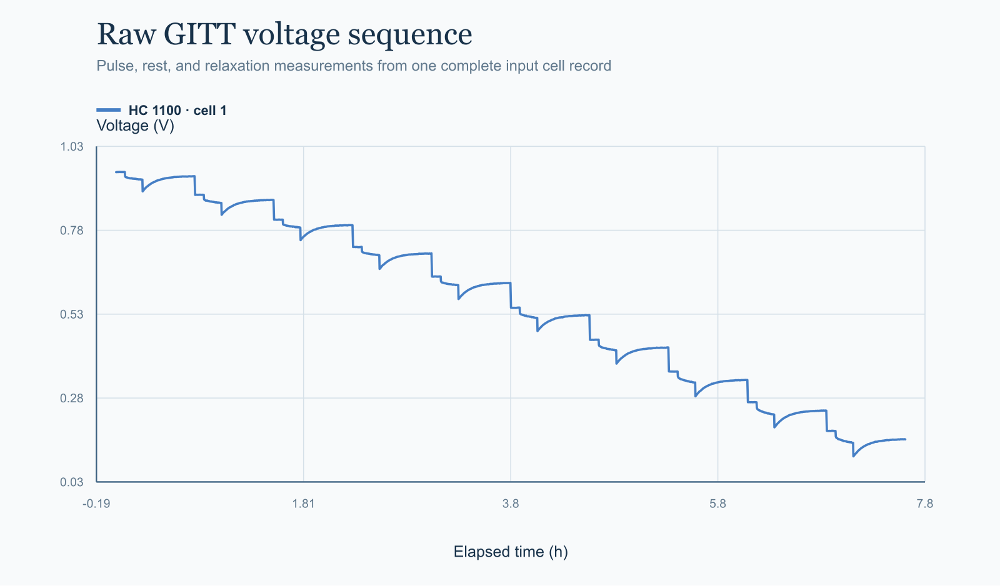

gitt_timeseries.csv
Time, stage type, current, voltage, and midpoint SOC for every cell and pulse.
 FrontierChallenge: A scientific workflow benchmark
FrontierChallenge: A scientific workflow benchmarkElectrochemistry · Hard
Resolve pulse, rest, and relaxation segments across hard-carbon cells, assess pulse quality from measured stability, and preserve SOC-dependent transport calculations in a checkable bundle.

Time, stage type, current, voltage, and midpoint SOC for every cell and pulse.
Sample condition, electrode area, active mass, and nominal current for all six cells.
Task-visible constants, QC conventions, and output requirements.
Current stability and relaxation quality determine pulse inclusion; cell and pulse identifiers cannot substitute for evidence.
Group records by cell and pulse, order points, and preserve the declared pre-rest, current-pulse, and relaxation labels.
Measure current variation and relaxation drift, then record an explicit inclusion decision for every pulse.
Carry accepted voltage changes, ohmic drop, polarization, and diffusion metrics with their SOC and cell identity.
Align pulse tables, representative points, sample statistics, figures, and narrative interpretation.